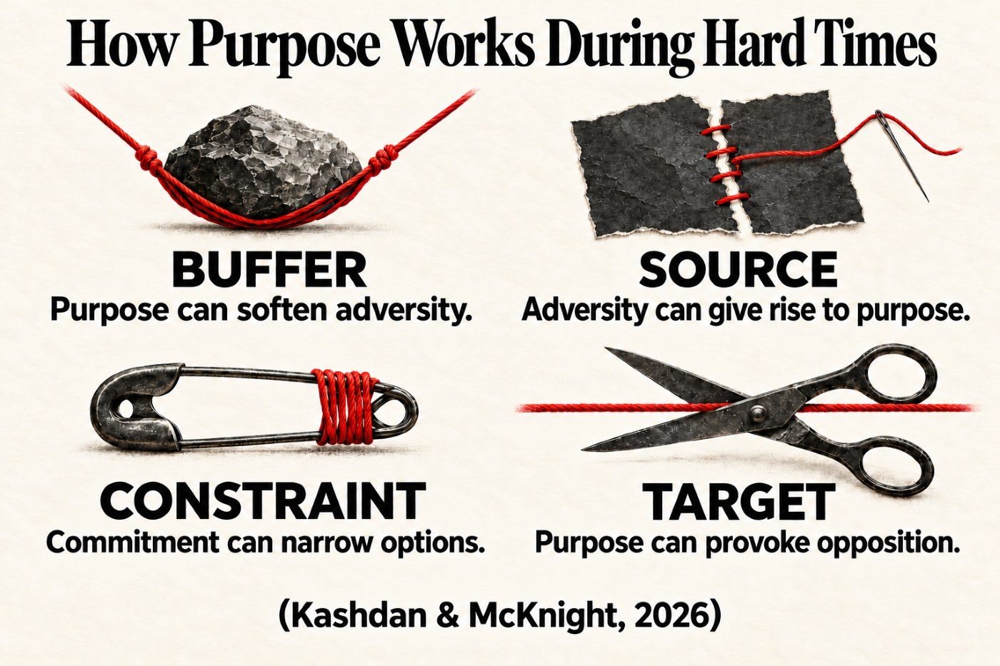
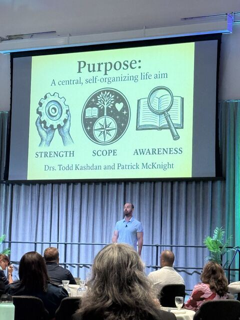

On Purpose
The Science of Building a Meaningful Life
The ultimate handbook with everything you need or want to know on creating big and small purposes.
Coming in 2027 from Ten Speed Press
Sign up and you’ll hear as soon as the book is available.
Purpose is a central, self-organizing life aim.
This is the definition we built in the Well-Being Lab, and it sits at the center of the book. A purpose organizes your goals and energy, and gives you an anchor to hold onto during hard times.


Bring the science of purpose to your event.
In keynotes and workshops, Todd shows audiences how to build a purpose and put the book’s strategies to work in their own lives.
Hear about On Purpose before anyone else.
Join Provoked, Todd’s free newsletter, for new essays on purpose, curiosity, and well-being, plus book news as it happens.
Provoked with Dr. Todd Kashdan
Psychologically sharp, evidence-based ideas that challenge conventional wisdom about purpose, curiosity, work, relationships, and the strange ways people behave.
Over 10,000 subscribers
By subscribing you agree to Substack’s Terms of Use and Privacy Policy.